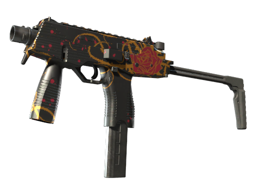

AK-47RedlineField-Tested21.40Value now, read 21 Aug 2026 09:31
Going to Steam accountnightjar_cs
The item on its way out: its picture, the gun, the skin and the wear, its value now with when that was read, and the Steam account it goes to. The card is the same on every state of the withdrawal clock; the notice above it says which state it is, never the card. Everything on this page is drawn by design/system/components/withdraw-item.css through index.css; the skins, values and the account are samples.
This component stands on no coloured screen yet. The withdrawal screens (nodes 5.3 to 5.8) are grey in wireframes/ and wait for the rollout, so it is built from kit.css and this page is its only coloured proof.
| Part | Class or element | What to change there |
|---|---|---|
| The card (the molecule's own) | .withdraw-item, --item-tier | the face: the tier's wash from the bottom left, the short bar at the foot under the picture, the corner --radius-m; the tier is set on the card by the page, --bg-rarity-1 to -7, and defaults to step 5 |
| The picture | .withdraw-item__art holding a Media slot (.media--skin) | the hexagon behind the skin; the picture column is 112px on a phone and 160px from 600px |
| The words (the molecule's own) | .withdraw-item__b, __w, __s, __wear | the gun in small capitals, the skin's name in white and cut with an ellipsis, the wear in a step of its tier |
| The value now | a Figure (.fig--money .fig--title) with the coin; its caption says when the price was read | only the gap above it; the figure and its caption are the atom's |
| The account | a Key-value line (.kv) | the rule over it and the gap; the Steam account it goes to, as the key and its value |
One form. It has no emphasis and no state of its own; two things vary, and neither is the card's choice.
--item-tier from the rarity ladder; the wash, the bar and the wear's step follow.




The picture column follows the viewport, not this 328px frame, so on a wide window the frame shows the wide form in a narrow box; narrow the window under 600px to see the phone form.
| Form | Measured |
|---|---|
| In a 560px container at this window | |
| Its picture column |
On the screens that send an item to Steam, once, above the notice that says where the clock stands. It names the item and the account it goes to, and gives its value now with the time that value was read, so the person sees the number the sending is settled on before it moves (design principle 3). It is a statement of one item, not an act: it carries no button, and the screen's own acts sit beside it.
A withdrawal screen: the one item on its way out, with its value now and its account, and the notice of the clock above it.
A skin the person holds, with its acts, is the Item card. What came out of a round is the Outcome card. An item in a drop table is the Drop card. A line of the same job without a picture is a Key-value line. The act of sending is a Button on the screen, never in this card.
No states: it is not interactive.
| Token | Kind | Dark | Light |
|---|
Read live from tokens.css. No component token and no colour primitive read directly: the face, its wash and its words read the semantic level, and the tier reads the role --bg-rarity-5 by default (it read the primitive in kit.css). Geometry and type come straight from the primitives.
File: design/system/components/withdraw-item.css, loaded by design/system/index.css in the molecules' group.
<article class="withdraw-item" style="--item-tier: var(--bg-rarity-2)">
<span class="withdraw-item__art"><span class="media media--skin"><img src="..." alt=""></span></span>
<div class="withdraw-item__b"><span class="withdraw-item__w">AK-47</span><span class="withdraw-item__s">Redline</span><span class="withdraw-item__wear">Field-Tested</span>
<span class="fig fig--money fig--title">...</span><div class="kv">...</div></div>
</article>
Stands on no coloured screen yet; it waits for the rollout of the withdrawal screens (inventory.md, Withdraw item). Its grey form is wf-held on pages of wireframes/.